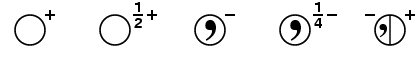
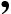

Return link to the symbol table

The first symbol above shows the position of a point (or atom or molecule) within the unit cell. The "+" sign represents the height +z. An open circle indicates a particular handedness for this point. In each space group diagram, the bottom left-hand region of the unit cell has been chosen for the position of an initial point with coordinates x,y,z. Symmetry equivalent positions are shown relative to this initial point.
The second symbol represents a point related by symmetry to the initial point, but now at a height 1/2+z. As an open circle, it has the same handedness as the initial point. Thus, in this instance, it is related either by a screw axis parallel to Z or by a lattice translation to the initial point.
The "

" in the third symbol indicates a change of handedness with respect to the initial point due to the presence of either a rotary-inversion axis or a plane within the space group. Note that height of the point is now -z. The fourth symbol shows a symmetry equivalent point of the opposite handednes and height 1/4-z.Finally, certain symmetry operations will result in two symmetry equivalent points being superimposed in the space group diagram. Thus a mirror plane in the plane of the screen will reflect the initial point from +z to -z with a change of handedness, but without any change in the x,y coordinates of the point. The effect of this is shown in the fifth symbol where the right-half might represent the initial point and the left-half is the symmetry equivalent position resulting from the operation of the mirror acting in the XY plane.